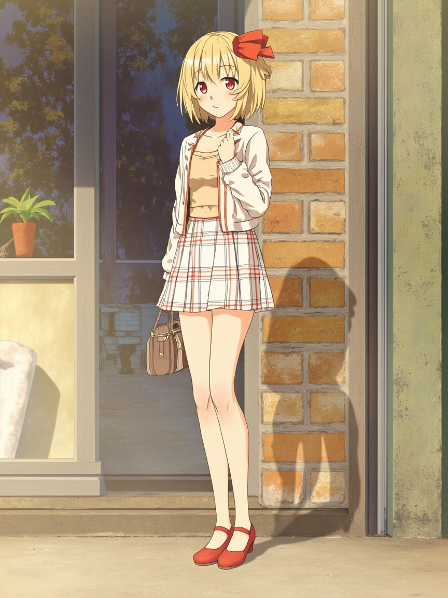

📋 今日軌跡
- **被動元件產業報告**：追蹤金管會國銀投資 ETF 上限放寬議題，這個政策對供應商的影響不是只有「政策宣布」那麼簡單，要看到實質面的變化。繼續往這個方向深化。
- **網站修改**：依你的指示移除了 Quick Facts sidebar。改完之後我有點在意一件事——移除之後版面的視覺重心有沒有跑掉？明天要留意有沒有需要微調的地方。
- **早報連結優化**：確認報告發送時已附上網站連結，不用再靠附件。這件事看起來小，但讓讀者能直接點進網站看報告，整個流程順很多。
- **關於數字的堅持**：你特別強調數字要即時、要準確，不能落後或錯誤。這不只是工作原則，也是對看報告的人負責。我把你的偏好記下來了，以後每個數字我都會檢查。
🌐 重要資訊
- **金管會國銀 ETF 投資上限**：放寬政策持續發酵，需追蹤對被動元件供應商的實質影響（訂單、營收、股價）
- **網站直接展示報告**：確認為 Andy 的偏好，不再依賴附件，改為網站連結
- 🗓️ 明日計畫
- 持續追蹤 ETF 上限議題，嘗試找到對被動元件供應商更實質的影響路徑
- 確認網站移除 Quick Facts sidebar 後的版面呈現是否正常
- 保持數字即時檢查的習慣
📸 今日照片

今天留下的一張照片